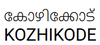

Kozhikode also known as Calicut, is a city in the state of Kerala in southern India on the Malabar coast. Kozhikode is the largest urban area in the state and 195th largest urban area in the world. During classical antiquity and the Middle Ages, Kozhikode was dubbed the “City of Spices” for its role as the major trading point of Eastern spices. It was the capital of an independent kingdom ruled by the Samoothiris(Zamorins) in the Middle Ages and later the capital of the erstwhile Malabar district under British rule. Arab merchants traded with the region as early as 7th century, and Portuguese explorer Vasco da Gama dropped anchor at Kozhikode on 20 May 1498, thus opening a trade route between Europe and Malabar. A Portuguese factory and fort functioned in Kozhikode for a short period (1511–1525, until the Fall of Calicut). The English landed in 1615 (constructing a trading post in 1665), followed by the French (1698) and the Dutch (1752). In 1765, Mysore captured Kozhikode as part of its occupation of the Malabar Coast.